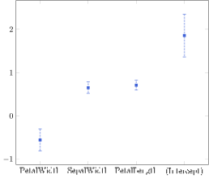
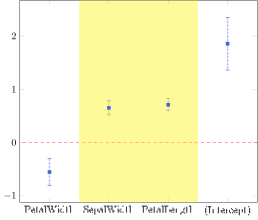

Utilities
LaTeX escaping
Charaters like % and $ are reserved for special functionalities in LaTeX. In addition, Coefplots.jl uses symbolic coords for regressor names, which further complicates the string escaping situation: parenthesis, commas and periods all need to be escaped. PGFPlotsX.jl uses raw string literal which left these situations unattended. The function latex_escape() will escape these characters so that in the tex output file % is written as \% (escaped, will not render as the symbol of the begining of comment in TeX), as an example. Coefplots.jl escapes parenthesis, commas and periods by adding a pair of brackets.
Coefplots.print_tex(Coefplots.latex_escape("%"))
Coefplots.print_tex(Coefplots.latex_escape("\$"))
Coefplots.print_tex(Coefplots.latex_escape("("))
Coefplots.print_tex(Coefplots.latex_escape(","))\%
$
{(}
{,}latex_escape() can be handy when assembling the Coefplot from a DataFrame. When parse() is invoked on a regression, latex_escape() is automatically called.
Coefficient Sorting
Sort the Coefplot by calling sortcoef!()
c = parse(regression_result)
sortcoef!(c; rev=false)
p = plot(c)
HLine and rHLine and their friends
HLine, VLine, HBand, VBand from PGFPlotsX.jl can be directly added to the plot by passing them to plot(). Coefplots.jl also allows relative specification of the location in rHLine, rVLine, rHBand, rVBand.
using PGFPlotsX
hline = @pgf Coefplots.HLine({dashed, red}, 0) # a horizontal line through point 0 on y axis, which is numerical.
rvband = @pgf rVBand({draw="none", fill="yellow", opacity = 0.4}, 0.25, 0.75) # a vertical band starting at the 1/4 of the total axis width, ending at the 3/4 of the total axis width.
p = plot(c, hline, rvband)